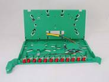
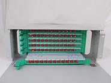
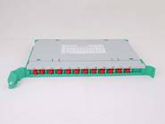

Fiber Optic Distribution Unit Box(一体化单元箱）

Features
Whole modular design as well as fully proved operation
Integrate welding and fiber distribution, maximize densification
Apply to both 19’’ and 23’’ rack
Apply to ribbon optical cable and non-ribbon optical cable
FC, SC adapter installed in a fastening way
The 30° angle formed by the adapter and connecting modules ensures the curvature radius of patch cord, which could prevent damages from human eyes.
Cables and pigtails possess a storage more than 2m
The outer shield keeps fibers off accidental damages
The connecting modules can be removed from the device and offers convenient operation
Ordering Guide
NO. |
Type |
Dimension (mm) H*W*D |
Description |
1 |
19YT-12a |
1U*482*280 |
12 Ports，Frame Unit |
2 |
19YT-24a |
2U*482*280 |
24 Ports，Frame Unit |
3 |
19YT-48a |
3U*482*280 |
48 Ports，Frame Unit |
4 |
19YT-72a |
4U*482*280 |
72 Ports，Frame Unit |
5 |
19YT-12b |
1U*482*280 |
12 Ports，Frame Unit |
6 |
19YT-24b |
2U*482*280 |
24 Ports，Frame Unit |
7 |
19YT-48b |
3U*482*280 |
48 Ports，Frame Unit |
8 |
19YT-72b |
4U*482*280 |
72 Ports，Frame Unit |